Os capítulos anteriores foram todos sobre a mesma pergunta: como gerar valores de uma distribuição. Inversão, rejeição, transformações, Box-Muller — cada método resolvia um caso. Este capítulo muda o foco e pergunta para quê: uma vez que sabemos gerar \(X_1, X_2, \ldots\), o que fazemos com esses valores?
A resposta é o Método de Monte Carlo (MMC): usar valores simulados para calcular, de forma aproximada, esperanças, probabilidades e integrais que não sabemos (ou não queremos) resolver no papel. A ideia é simples a ponto de parecer boa demais — trocar uma conta difícil por uma média de números sorteados — mas ela é a base de boa parte da estatística computacional moderna.
Seja \(X\) uma v.a. discreta com função de probabilidade \(p(x)\), ou uma v.a. contínua com densidade \(f(x)\). Queremos calcular
Suponha que saibamos gerar valores com a distribuição de \(X\). Geramos \(X_1, \dots, X_B\) independentes, aplicamos \(g\) em cada um deles e tiramos a média.
Definição: estimador de Monte Carlo
Sejam \(X_1, \dots, X_B\) v.a.’s i.i.d. com a mesma distribuição de \(X\). O estimador de Monte Carlo de \(\theta = \mathbb{E}[g(X)]\) é
Note que o algoritmo tem dois ingredientes, e apenas um deles é novo: gerar os \(X_i\) é exatamente o assunto dos capítulos anteriores; calcular a média é o passo trivial. Toda a dificuldade prática de Monte Carlo está em saber quem é \(X\) e quem é \(g\) — isto é, em reescrever a quantidade de interesse como uma esperança.
9.1.1 Por que funciona?
Proposição: propriedades do estimador de Monte Carlo
Suponha que \(\mathbb{E}[|g(X)|] < \infty\) e seja \(\sigma^2 = \text{Var}(g(X))\). Então:
\(\mathbb{E}[\hat{\theta}_B] = \theta\), ou seja, \(\hat{\theta}_B\) é não viesado;
se \(\sigma^2 < \infty\), \(\text{Var}(\hat{\theta}_B) = \dfrac{\sigma^2}{B}\);
\(\hat{\theta}_B \longrightarrow \theta\) quase certamente, quando \(B \to \infty\).
Demonstração
Como os \(X_i\) têm a mesma distribuição de \(X\), cada \(g(X_i)\) tem esperança \(\theta\). Pela linearidade da esperança,
Finalmente, (iii) é exatamente a Lei Forte dos Grandes Números aplicada às v.a.’s i.i.d. \(Y_i = g(X_i)\), que têm esperança \(\theta\) finita. \(\square\)
O item (iii) é a garantia de que o método faz sentido: aumentando \(B\), chegamos tão perto de \(\theta\) quanto quisermos. Já o item (ii) é o que diz quão rápido chegamos — voltaremos a ele na seção Quão preciso é o método?.
Por que \(B\), e não \(n\)?
Neste capítulo o número de valores simulados é chamado de \(B\), e não de \(n\). A razão é que, em estatística, \(n\) costuma denotar o tamanho de uma amostra de dados reais — que é o que ele é, por exemplo, no Exercício 6. Já \(B\) é o número de repetições que nós decidimos fazer no computador: podemos aumentá-lo à vontade, ao custo de tempo de máquina.
9.2 Exemplo 1: Estimativa de uma Integral
Queremos obter uma estimativa para
\[
\theta = \int_{0}^{1} e^{-x}\, dx.
\]
Para isso, basta observar que se \(U \sim \text{Unif}(0,1)\), então sua densidade é \(f(u) = 1\) no intervalo \((0,1)\), e portanto
Ou seja, estamos no caso \(X = U \sim \text{Unif}(0,1)\) e \(g(x) = e^{-x}\). O estimador de Monte Carlo desta integral é então a média de \(e^{-U_i}\):
set.seed(58)B <-100u <-runif(B, min =0, max =1)# Estimativa de theta usando Monte Carlotheta_hat <-mean(exp(-u))cat("Estimativa de theta:", theta_hat, "\n")
Estimativa de theta: 0.6672518
Mostrar código
# Valor real da integralvalor_real <-1-exp(-1)cat("Valor real:", valor_real, "\n")
Valor real: 0.6321206
Mostrar código
import numpy as npnp.random.seed(58)# Número de simulaçõesB =100# Geração de valores uniformesu = np.random.uniform(0, 1, B)# Estimativa de theta usando Monte Carlotheta_hat = np.mean(np.exp(-u))print("Estimativa de theta:", theta_hat)
Estimativa de theta: 0.6445501026553044
Mostrar código
# Valor real da integralvalor_real =1- np.exp(-1)print("Valor real:", valor_real)
Valor real: 0.6321205588285577
Vamos verificar como o valor de \(B\) influencia na aproximação. Para isso, calculamos \(\hat{\theta}_1, \hat{\theta}_2, \ldots, \hat{\theta}_{2000}\), isto é, a estimativa obtida com o primeiro valor gerado, com os dois primeiros, e assim por diante:
library(ggplot2)set.seed(58)B <-2000u <-runif(B)# cumsum(x)[i] é a soma dos i primeiros elementos de x. Dividindo pelo índice,# obtemos a média dos i primeiros valores, ou seja, a estimativa com i simulaçõestheta_hat_parcial <-cumsum(exp(-u)) / (1:B)dados <-data.frame(b =1:B, theta_hat = theta_hat_parcial)ggplot(dados, aes(x = b, y = theta_hat)) +geom_line(color ="blue") +geom_hline(yintercept =1-exp(-1), color ="red", linetype ="dashed") +labs(x ="B", y =expression(hat(theta)[B]),title ="Convergencia do estimador de Monte Carlo") +theme_minimal()
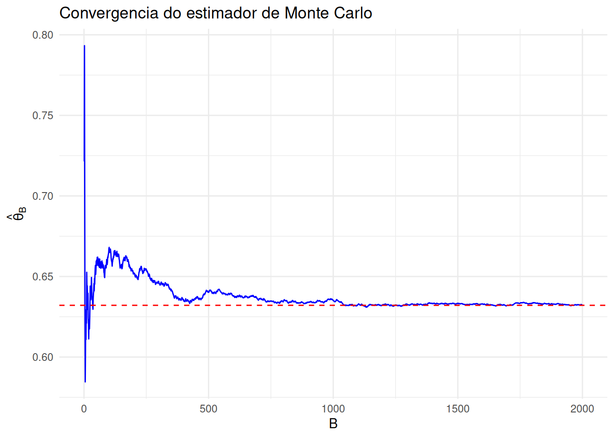
Mostrar código
import numpy as npimport matplotlib.pyplot as pltnp.random.seed(58)B =2000u = np.random.uniform(0, 1, B)# np.cumsum(x)[i] é a soma dos i+1 primeiros elementos de x. Dividindo pelo# índice, obtemos a estimativa baseada nas i+1 primeiras simulaçõestheta_hat_parcial = np.cumsum(np.exp(-u)) / np.arange(1, B +1)plt.plot(np.arange(1, B +1), theta_hat_parcial, color='blue')plt.axhline(y=1- np.exp(-1), color='red', linestyle='--')plt.xlabel('B')plt.ylabel(r'$\hat{\theta}_B$')plt.title('Convergencia do estimador de Monte Carlo')plt.show()
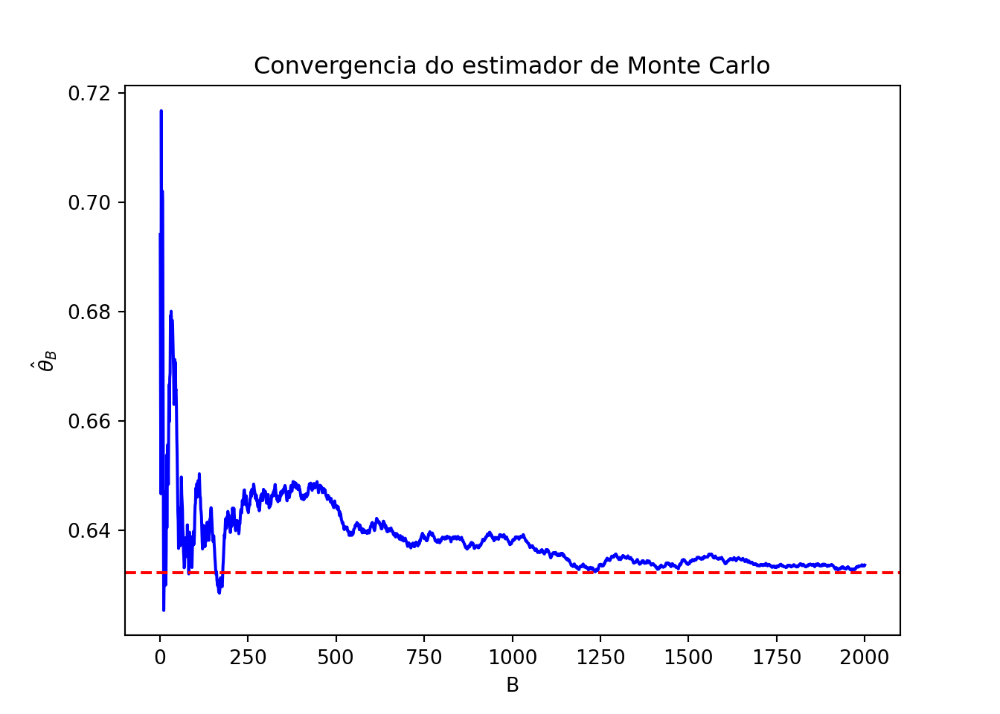
O gráfico mostra a evolução da estimativa à medida que o número de valores gerados \(B\) aumenta, comparada com o valor real da integral. Repare em dois aspectos: a estimativa se aproxima do valor verdadeiro, mas de forma errática (ela não melhora a cada passo — apenas na média), e a oscilação vai diminuindo devagar. Quantificar esse “devagar” é o assunto da seção Quão preciso é o método?.
9.3 Escolhendo a densidade: integrais em outros domínios
No Exemplo 1 tivemos sorte: a integral era em \((0,1)\) e a densidade da uniforme vale exatamente \(1\) ali, então a integral já era uma esperança. O caso geral pede um passo a mais. Suponha que queremos calcular
\[
\theta = \int_A g(x)\, dx
\]
para uma região \(A\) qualquer. O truque é multiplicar e dividir o integrando por uma densidade \(f\)escolhida por nós:
o que é válido desde que \(f(x) > 0\) em todo ponto de \(A\) em que \(g(x) \neq 0\). Temos então liberdade total: qualquer densidade que saibamos simular e cujo suporte cubra \(A\) serve.
A escolha mais simples, quando \(A = [a,b]\) é limitado, é a uniforme nesse intervalo: \(f(x) = 1/(b-a)\), de modo que \(g(x)/f(x) = (b-a)g(x)\) e
set.seed(58)B <-10000a <-0b <- piu <-runif(B, min = a, max = b)# Não esqueça do fator (b - a): a densidade da Unif(a,b) vale 1/(b-a), e não 1theta_hat <- (b - a) *mean(u *sin(u))cat("Estimativa de theta:", theta_hat, "\n")
Estimativa de theta: 3.12135
Mostrar código
cat("Valor real:", pi, "\n")
Valor real: 3.141593
Mostrar código
import numpy as npnp.random.seed(58)B =10000a =0b = np.piu = np.random.uniform(a, b, B)# Não esqueça do fator (b - a): a densidade da Unif(a,b) vale 1/(b-a), e não 1theta_hat = (b - a) * np.mean(u * np.sin(u))print("Estimativa de theta:", theta_hat)
Estimativa de theta: 3.141924435234792
Mostrar código
print("Valor real:", np.pi)
Valor real: 3.141592653589793
Atenção: o fator \((b-a)\)
Esquecer de multiplicar por \((b-a)\) é o erro mais comum ao aplicar Monte Carlo a uma integral. Uma forma de se proteger dele é testar o código com \(g \equiv 1\): a estimativa deve dar \(b - a\), que é o comprimento do intervalo, e não \(1\).
9.5 Exemplo 3: Uma integral em um domínio ilimitado
Quando o domínio é ilimitado, a uniforme não serve — não existe distribuição uniforme em \((0,\infty)\). Precisamos então de uma densidade \(f\) com o suporte certo. Queremos estimar
\[
\theta = \int_{0}^{\infty} e^{-x^2}\, dx,
\]
cujo valor exato é \(\theta = \sqrt{\pi}/2\). Uma densidade com suporte em \((0, \infty)\) que já sabemos simular é a da \(\text{Exp}(1)\), dada por \(f(x) = e^{-x}\) para \(x \geq 0\). Aplicando a identidade da seção anterior com essa escolha:
set.seed(58)B <-2000x <-rexp(B, rate =1)theta_hat_parcial <-cumsum(exp(-(x^2- x))) / (1:B)dados <-data.frame(b =1:B, theta_hat = theta_hat_parcial)ggplot(dados, aes(x = b, y = theta_hat)) +geom_line(color ="blue") +geom_hline(yintercept =sqrt(pi) /2, color ="red", linetype ="dashed") +labs(x ="B", y =expression(hat(theta)[B]),title ="Convergencia do estimador de Monte Carlo") +theme_minimal()
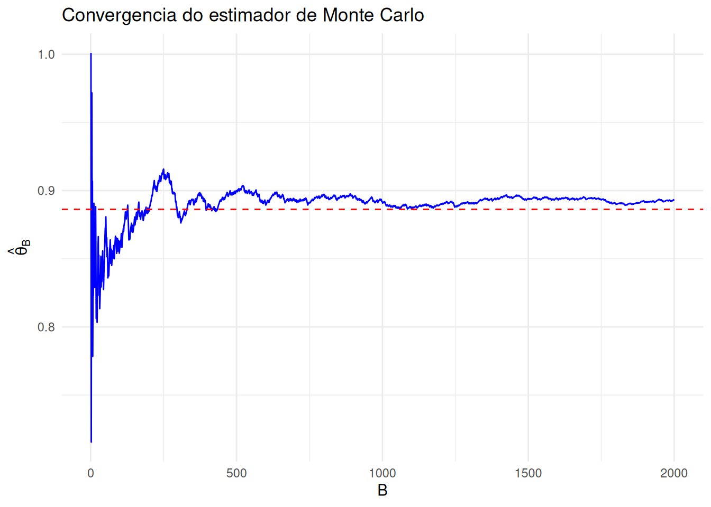
Mostrar código
import numpy as npimport matplotlib.pyplot as pltnp.random.seed(58)B =2000x = np.random.exponential(scale=1.0, size=B)theta_hat_parcial = np.cumsum(np.exp(-(x**2- x))) / np.arange(1, B +1)plt.plot(np.arange(1, B +1), theta_hat_parcial, color='blue')plt.axhline(y=np.sqrt(np.pi) /2, color='red', linestyle='--')plt.xlabel('B')plt.ylabel(r'$\hat{\theta}_B$')plt.title('Convergencia do estimador de Monte Carlo')plt.show()
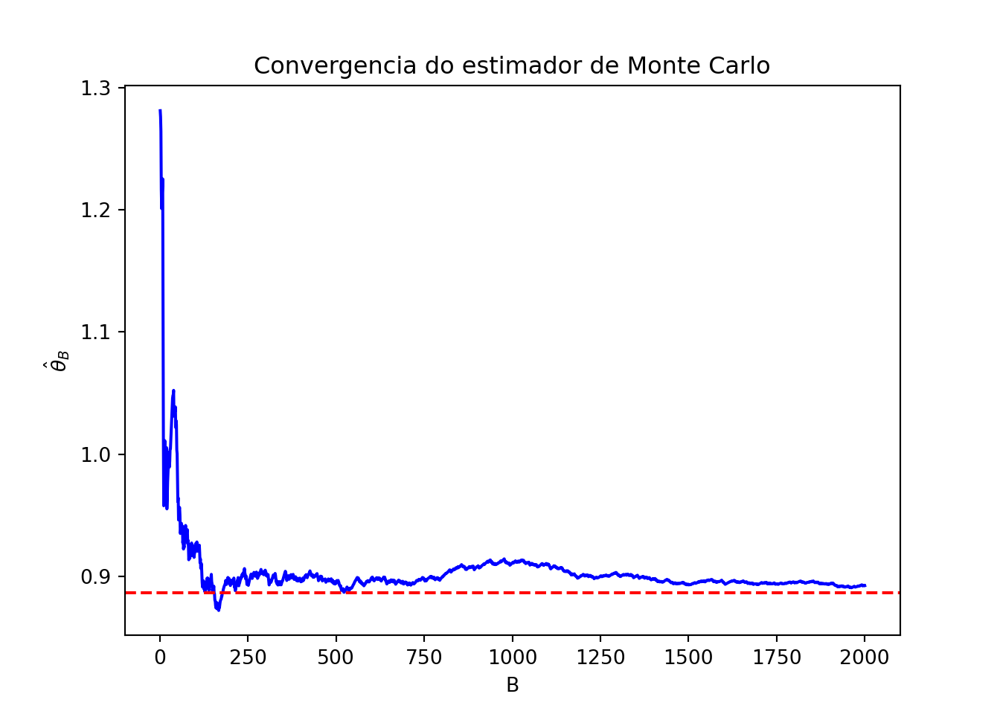
A escolha de \(f\) é livre — e importa
No exemplo acima poderíamos ter usado qualquer outra densidade com suporte em \((0,\infty)\): uma \(\text{Exp}(2)\), uma Gama, uma meia-normal. Todas dariam estimadores não viesados do mesmo \(\theta\), mas com variâncias diferentes — isto é, umas exigiriam muito menos simulações que outras para a mesma precisão. Escolher \(f\) de propósito para reduzir a variância é o assunto do Capítulo 11 (amostragem por importância).
9.6 Exemplo 4: Aproximando uma Probabilidade
Seja \(X \sim \text{Gama}(2,3)\). Queremos aproximar o valor de \(\mathbb{P}(X \geq 0{,}4)\) pelo método de Monte Carlo. À primeira vista isso não parece uma esperança, mas é: note que
em que \(g(x) = I(x \geq 0{,}4)\) é a função indicadora e \(f\) é a densidade da \(\text{Gama}(2,3)\). Isso vale porque a esperança de uma indicadora é justamente a probabilidade do evento indicado: \(\mathbb{E}[I(X \in A)] = \mathbb{P}(X \in A)\).
Neste caso, o algoritmo corresponde a gerar \(X_i \sim \text{Gama}(2,3)\) e definir \(Y_i = I(X_i \geq 0{,}4)\), que vale \(1\) quando \(X_i \geq 0{,}4\) e \(0\) caso contrário. A estimativa de Monte Carlo é a média dos \(Y_i\), ou seja, a proporção de valores gerados que caíram no evento:
set.seed(58)# Número de simulaçõesB <-50000# Geração de valores da distribuição Gama(2,3)x <-rgamma(B, shape =2, rate =3)# Indicadora do evento de interesse: TRUE vira 1 e FALSE vira 0y <-as.integer(x >=0.4)# Estimativa via Monte Carlovalor_aproximado <-mean(y)cat("Valor aproximado via Monte Carlo:", valor_aproximado, "\n")
Valor aproximado via Monte Carlo: 0.66282
Mostrar código
# Valor real, usando a função de distribuição acumulada (f.d.a.)valor_real <-1-pgamma(0.4, shape =2, rate =3)cat("Valor real (f.d.a.):", valor_real, "\n")
Valor real (f.d.a.): 0.6626273
Mostrar código
import numpy as npfrom scipy.stats import gammanp.random.seed(58)# Número de simulaçõesB =50000# Geração de valores da distribuição Gama(2,3): no scipy, o segundo# parâmetro entra como escala, isto é, como 1/taxax = gamma.rvs(2, scale=1/3, size=B)# Indicadora do evento de interesse: True vira 1 e False vira 0y = (x >=0.4).astype(int)# Estimativa via Monte Carlovalor_aproximado = np.mean(y)print("Valor aproximado via Monte Carlo:", valor_aproximado)
Valor aproximado via Monte Carlo: 0.66114
Mostrar código
# Valor real, usando a função de distribuição acumulada (f.d.a.)valor_real =1- gamma.cdf(0.4, 2, scale=1/3)print("Valor real (f.d.a.):", valor_real)
Valor real (f.d.a.): 0.6626272662068446
Toda probabilidade é uma esperança
O que fizemos aqui vale sempre: para estimar \(\mathbb{P}(X \in A)\), basta gerar valores de \(X\) e calcular a proporção deles que cai em \(A\). É o caso \(g = I(\cdot \in A)\) do método geral, e por isso não precisamos de nenhuma teoria nova para estimar probabilidades — nem mesmo quando \(A\) é um evento complicado, descrito por várias variáveis ao mesmo tempo, como no Exemplo 8.
9.7 Exemplo 5: Aproximando o valor de \(\pi\)
Neste exemplo, queremos aproximar o valor de \(\pi\) utilizando o método de Monte Carlo. A ideia é gerar pontos aleatórios em um quadrado e contar quantos caem dentro de um círculo inscrito no quadrado. Vamos seguir o raciocínio a partir da geometria básica.
9.7.1 Geometria
Considere um quadrado com lado 2 centrado na origem, ou seja, o quadrado vai de \((-1, -1)\) até \((1, 1)\).
Dentro deste quadrado, inscreva um círculo de raio 1, também centrado na origem.
A área do quadrado é \(4\) (já que \(2 \times 2 = 4\)) e a área do círculo é \(\pi \cdot r^2 = \pi \cdot 1^2 = \pi\).
A razão entre a área do círculo e a área do quadrado é dada por:
\[
\frac{\text{Área do círculo}}{\text{Área do quadrado}} = \frac{\pi}{4}
\]
import matplotlib.pyplot as pltfrom matplotlib.patches import Rectangle, Circle# Configura o gráficofig, ax = plt.subplots()ax.set_aspect('equal') # Define o aspecto como 1:1 (quadrado)ax.set_xlim(-1, 1)
(-1.0, 1.0)
Mostrar código
ax.set_ylim(-1, 1)
(-1.0, 1.0)
Mostrar código
ax.set_xlabel('')ax.set_ylabel('')# Desenha o retângulorect = Rectangle((-1, -1), 2, 2, edgecolor='blue', facecolor='none')ax.add_patch(rect)# Desenha o círculocircle = Circle((0, 0), 1, edgecolor='red', facecolor='none')ax.add_patch(circle)# Mostra o gráficoplt.show()
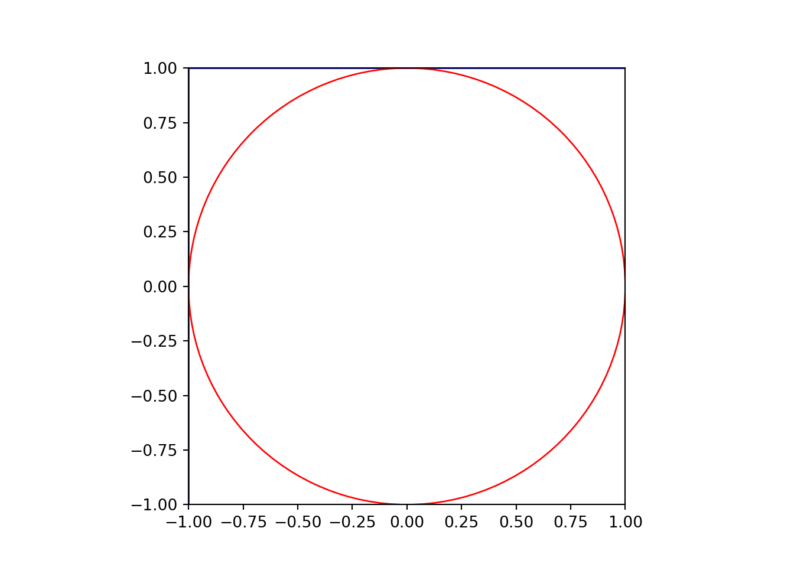
Para estimar \(\pi\) usando Monte Carlo, procedemos da seguinte forma:
Geramos pontos aleatórios \((x, y)\) no quadrado \([-1, 1] \times [-1, 1]\).
Verificamos se cada ponto está dentro do círculo, o que ocorre se \(x^2 + y^2 \leq 1\).
A fração de pontos que caem dentro do círculo aproxima a razão \(\frac{\pi}{4}\).
Multiplicamos essa fração por 4 para obter uma estimativa de \(\pi\).
9.7.2 Matemática do estimador
Formalmente, se \((X,Y)\) é um ponto com \(X \sim \text{Unif}(-1,1)\) e \(Y \sim \text{Unif}(-1,1)\) independentes, e \(g(x,y) = I(\text{$(x,y)$ está no círculo})\), temos que
\[
\theta := \int g(x,y) f(x,y)\, dx\, dy = \frac{\text{Área do círculo}}{\text{Área do quadrado}} = \frac{\pi}{4}.
\]
Assim, se \((X_i,Y_i)\) é um ponto gerado uniformemente dentro do quadrado, o estimador de Monte Carlo para \(\frac{\pi}{4}\) é dado por
Ou seja, à medida que o número de pontos simulados \(B\) aumenta, a estimativa \(\hat{\pi}_B\) converge para o valor verdadeiro de \(\pi\).
O código abaixo simula esse processo, gerando \(B\) pontos e calculando a aproximação de \(\pi\) com base nos que caem dentro do círculo. O gráfico mostra como a estimativa melhora conforme o número de simulações aumenta.
set.seed(459)B <-80000z <-numeric(B)# Loop para gerar os pontos e verificar se estão dentro do círculo.# Como U ~ Unif(0,1), 2*U - 1 tem distribuição Unif(-1,1)for (i in1:B) { x <-2*runif(1) -1 y <-2*runif(1) -1 z[i] <- (x^2+ y^2<=1)}# Estimativa de pi usando os i primeiros pontos, para cada itheta_hat <-cumsum(z) / (1:B)pi_hat <- theta_hat *4dados <-data.frame(b =1:B, pi_hat = pi_hat)ggplot(dados, aes(x = b, y = pi_hat)) +geom_line(color ="blue") +geom_hline(yintercept = pi, color ="red", linetype ="dashed") +labs(x ="B", y =expression(hat(pi)[B]),title ="Aproximacao de pi") +theme_minimal()
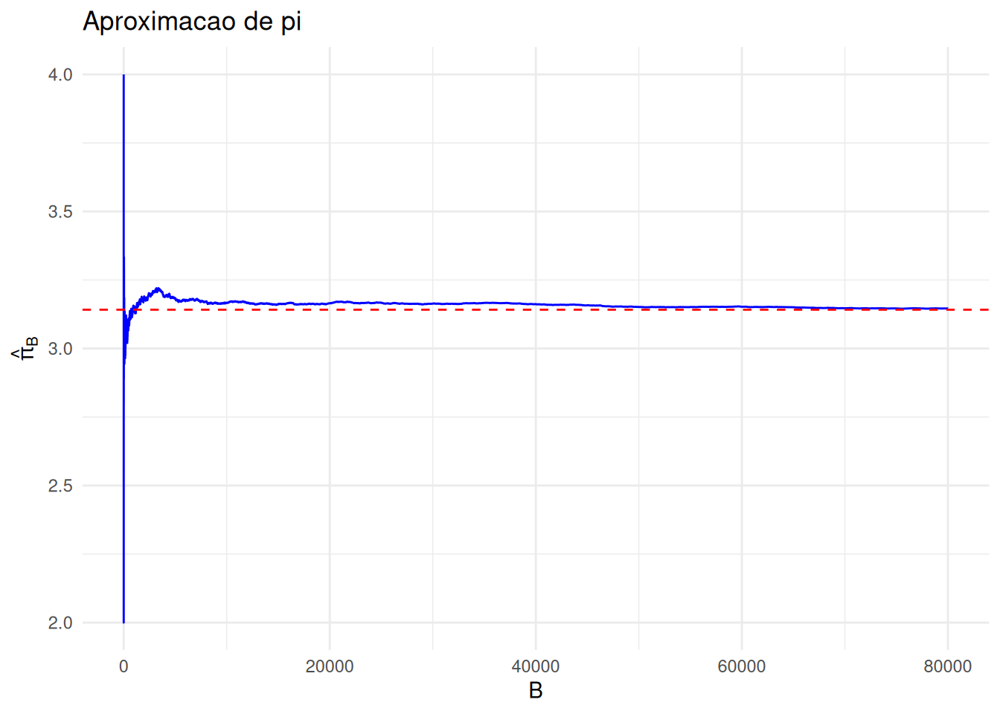
Mostrar código
import numpy as npimport matplotlib.pyplot as pltnp.random.seed(459)B =80000z = np.zeros(B)# Loop para gerar os pontos e verificar se estão dentro do círculo.# Como U ~ Unif(0,1), 2*U - 1 tem distribuição Unif(-1,1)for i inrange(B): x =2* np.random.uniform(0, 1) -1 y =2* np.random.uniform(0, 1) -1 z[i] = (x**2+ y**2<=1)# Estimativa de pi usando os i primeiros pontos, para cada itheta_hat = np.cumsum(z) / np.arange(1, B +1)pi_hat = theta_hat *4plt.plot(np.arange(1, B +1), pi_hat, color='blue')plt.axhline(y=np.pi, color='red', linestyle='--')plt.xlabel('B')plt.ylabel(r'$\hat{\pi}_B$')plt.title('Aproximacao de pi')plt.show()
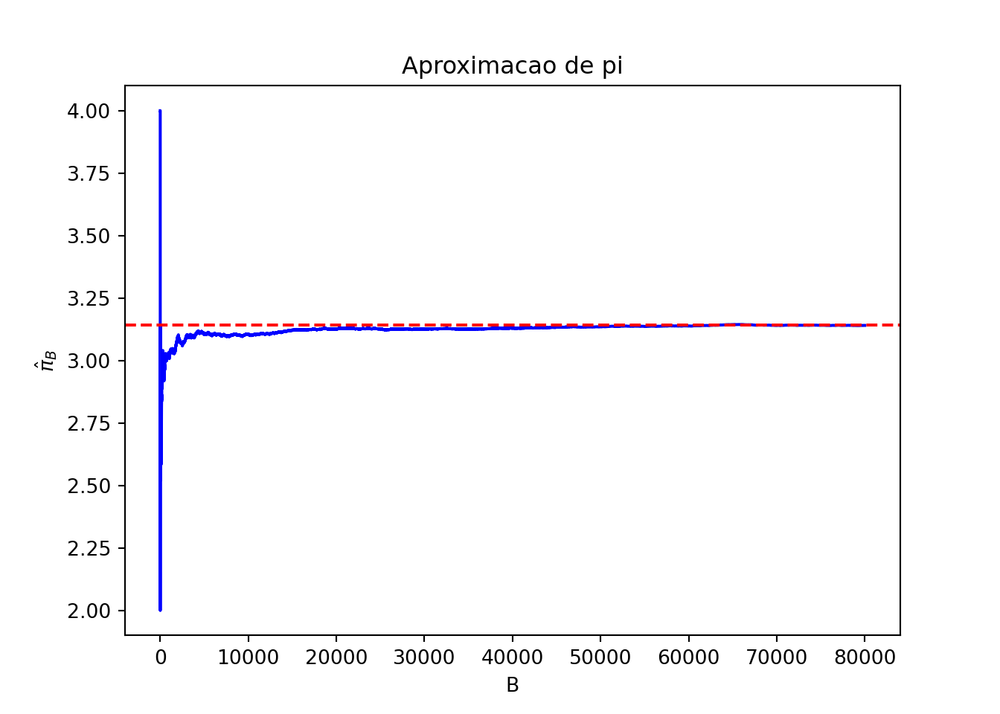
Repare na escala do eixo horizontal: foram necessários dezenas de milhares de pontos para estabilizar as duas primeiras casas decimais de \(\pi\). Monte Carlo é um método geral, não um método rápido — como veremos a seguir.
9.8 Quão preciso é o método?
O item (ii) da proposição diz que \(\text{Var}(\hat{\theta}_B) = \sigma^2/B\), com \(\sigma^2 = \text{Var}(g(X))\). Tomando a raiz quadrada, o erro padrão do estimador é
O \(\sqrt{B}\) no denominador é a característica mais importante do método, e vale a pena olhar para ela com atenção:
\(B\)
erro padrão
\(100\)
\(\sigma/10\)
\(10\,000\)
\(\sigma/100\)
\(1\,000\,000\)
\(\sigma/1000\)
Ou seja: para ganhar uma casa decimal, é preciso multiplicar \(B\) por 100. Foi exatamente isso que vimos no Exemplo 5, em que \(80\,000\) pontos ainda deixavam a terceira casa de \(\pi\) indefinida. Não adianta insistir: a taxa \(1/\sqrt{B}\) é inerente ao método, e a única forma de melhorá-la é reduzir \(\sigma\) — o assunto dos Capítulos 10 e 11.
Note também o que não aparece na fórmula: nada sobre a dimensão do problema, nada sobre a suavidade de \(g\). Essa indiferença é o que torna o método tão útil.
Monte Carlo e a maldição da dimensionalidade
Para aproximar \(\int_0^1 g(x)\,dx\) em dimensão \(1\), métodos determinísticos como a regra do trapézio são muito melhores que Monte Carlo: com \(B\) pontos igualmente espaçados, o erro do trapézio é da ordem de \(B^{-2}\), contra \(B^{-1/2}\) do Monte Carlo.
A situação se inverte em dimensão alta. Para integrar em \([0,1]^d\) com uma grade de \(m\) pontos por eixo, são necessárias \(B = m^d\) avaliações, e o erro fica da ordem de \(m^{-2} = B^{-2/d}\). Esse expoente piora com \(d\): em dimensão \(10\), o erro cai como \(B^{-1/5}\), muito mais devagar que o \(B^{-1/2}\) do Monte Carlo, que não muda com a dimensão.
Em problemas de dimensão moderada ou alta — o caso típico em estatística, em que integramos sobre todos os parâmetros de um modelo — Monte Carlo não é uma alternativa entre outras: é frequentemente a única viável.
9.9 Intervalos de confiança para estimativas de Monte Carlo
Saber que o erro é da ordem de \(\sigma/\sqrt{B}\) é pouco útil na prática, porque não conhecemos \(\sigma\) (se conhecêssemos a distribuição de \(g(X)\) tão bem, talvez nem precisássemos simular). A saída é estimar \(\sigma\) com os mesmos valores simulados e usar essa estimativa para construir um intervalo de confiança.
Pelo Teorema Central do Limite, para \(B\) suficientemente grande,
em que \(\sigma^2 = \text{Var}(g(X))\). Substituindo \(\sigma\) por sua estimativa \(\hat{\sigma}\), obtemos o intervalo de confiança aproximado para \(\theta\), com nível de confiança \((1 - \alpha) \times 100\%\):
em que \(z_{\alpha/2}\) é o quantil da \(N(0,1)\) que deixa \(\alpha/2\) de probabilidade à direita (por exemplo, \(z_{0,025} \approx 1{,}96\) para \(95\%\) de confiança).
Pseudo-algoritmo: intervalo de confiança para \(\theta\)
Gere \(X_1, \dots, X_B\) i.i.d. com a distribuição de \(X\) e calcule \(Y_i = g(X_i)\).
Estime o desvio padrão de \(g(X)\): \[
\hat{\sigma} = \sqrt{\frac{1}{B-1} \sum_{i=1}^B (Y_i - \hat{\theta}_B)^2}.
\]
Calcule o erro padrão \(\hat{\sigma}/\sqrt{B}\) e devolva \[
\left[\hat{\theta}_B - z_{\alpha/2} \frac{\hat{\sigma}}{\sqrt{B}},\;
\hat{\theta}_B + z_{\alpha/2} \frac{\hat{\sigma}}{\sqrt{B}}\right].
\]
Atenção: desvio padrão e erro padrão são coisas diferentes
\(\hat{\sigma}\) estima a dispersão de uma observação \(g(X_i)\), e não muda quando \(B\) cresce. O que encolhe com \(B\) é o erro padrão\(\hat{\sigma}/\sqrt{B}\), que mede a dispersão da média. Trocar um pelo outro produz intervalos absurdamente largos (ou, pior, um código que parece funcionar).
9.10 Exemplo 6: Intervalo de Confiança para a Estimativa de \(\pi\)
Vamos construir um intervalo de confiança de \(95\%\) para a estimativa de \(\pi\) do Exemplo 5. Aqui \(g(X_i, Y_i) = Z_i\) é uma indicadora, e o intervalo é construído para \(\theta = \pi/4\); ao final, multiplicamos os dois extremos por \(4\) para obter um intervalo para \(\pi\).
set.seed(0)B <-10000# número de simulaçõesz <-numeric(B)# Loop para gerar os pontos e verificar se estão dentro do círculofor (i in1:B) { x <-2*runif(1) -1 y <-2*runif(1) -1 z[i] <- (x^2+ y^2<=1)}# Estimativa pontualtheta_hat <-mean(z)pi_hat <- theta_hat *4cat("Estimativa de pi:", pi_hat, "\n")
Estimativa de pi: 3.1308
Mostrar código
# Desvio padrão de uma observação e erro padrão da médiasigma_hat <-sd(z)erro_padrao <- sigma_hat /sqrt(B)alpha <-0.05# nível de significânciaz_alpha2 <-qnorm(1- alpha /2)# Intervalo de confiança para theta = pi/4 e, multiplicando por 4, para piic_theta <-c(theta_hat - z_alpha2 * erro_padrao, theta_hat + z_alpha2 * erro_padrao)ic_pi <-4* ic_thetacat("Intervalo de confiança para pi:", ic_pi, "\n")
Intervalo de confiança para pi: 3.098466 3.163134
Mostrar código
import numpy as npfrom scipy.stats import normnp.random.seed(0)B =10000# número de simulaçõesz = np.zeros(B)# Loop para gerar os pontos e verificar se estão dentro do círculofor i inrange(B): x =2* np.random.uniform(0, 1) -1 y =2* np.random.uniform(0, 1) -1 z[i] = (x**2+ y**2<=1)# Estimativa pontualtheta_hat = np.mean(z)pi_hat = theta_hat *4print("Estimativa de pi:", pi_hat)
Estimativa de pi: 3.1228
Mostrar código
# Desvio padrão de uma observação e erro padrão da média.# ddof=1 faz o numpy dividir por B-1, como o sd() do Rsigma_hat = np.std(z, ddof=1)erro_padrao = sigma_hat / np.sqrt(B)alpha =0.05# nível de significânciaz_alpha2 = norm.ppf(1- alpha /2)# Intervalo de confiança para theta = pi/4 e, multiplicando por 4, para piic_theta = np.array([theta_hat - z_alpha2 * erro_padrao, theta_hat + z_alpha2 * erro_padrao])ic_pi =4* ic_thetaprint("Intervalo de confiança para pi:", ic_pi)
Intervalo de confiança para pi: [3.09035923 3.15524077]
O intervalo obtido tem semi-amplitude próxima de \(0{,}03\), ou seja, ele localiza \(\pi\) com incerteza já na segunda casa decimal — \(10\,000\) simulações não bastam nem para garantir o “\(3{,}14\)”. E, ao contrário do gráfico do Exemplo 5, esse diagnóstico foi obtido sem conhecer o valor verdadeiro, usando apenas os valores simulados. É assim que se reporta uma estimativa de Monte Carlo: nunca sozinha, sempre acompanhada do erro padrão ou de um intervalo.
9.10.1 Quantas simulações são necessárias?
O intervalo também responde à pergunta prática do capítulo: se queremos que a semi-amplitude do intervalo seja no máximo \(\varepsilon\), precisamos de
Como \(\sigma\) é desconhecido, a receita usual tem duas etapas: rodamos uma simulação piloto, pequena, só para estimar \(\sigma\); com \(\hat{\sigma}\) em mãos, calculamos o \(B\) necessário e rodamos a simulação de verdade. Vejamos quantas simulações seriam necessárias para determinar \(\pi\) com erro de, no máximo, \(0{,}001\):
set.seed(1)# Etapa 1: simulação piloto, apenas para estimar sigmaB_piloto <-1000x <-runif(B_piloto, -1, 1)y <-runif(B_piloto, -1, 1)z <-as.integer(x^2+ y^2<=1)sigma_hat <-sd(z)# Etapa 2: B necessário para a semi-amplitude desejada.# Como estimamos pi = 4*theta, o erro em pi é 4 vezes o erro em thetaepsilon <-0.001z_alpha2 <-qnorm(0.975)B_necessario <- (z_alpha2 *4* sigma_hat / epsilon)^2cat("Desvio padrão estimado:", sigma_hat, "\n")
Desvio padrão estimado: 0.4210431
Mostrar código
cat("B necessário:", ceiling(B_necessario), "\n")
B necessário: 10896054
Mostrar código
import numpy as npfrom scipy.stats import normnp.random.seed(1)# Etapa 1: simulação piloto, apenas para estimar sigmaB_piloto =1000x = np.random.uniform(-1, 1, B_piloto)y = np.random.uniform(-1, 1, B_piloto)z = (x**2+ y**2<=1).astype(int)sigma_hat = np.std(z, ddof=1)# Etapa 2: B necessário para a semi-amplitude desejada.# Como estimamos pi = 4*theta, o erro em pi é 4 vezes o erro em thetaepsilon =0.001z_alpha2 = norm.ppf(0.975)B_necessario = (z_alpha2 *4* sigma_hat / epsilon)**2print("Desvio padrão estimado:", sigma_hat)
O número que sai é da ordem de dez milhões de simulações — e ainda assim para apenas três casas decimais de \(\pi\). Arquimedes, com polígonos inscritos e circunscritos e sem computador algum, já garantia as duas primeiras casas no século III a.C.
Atenção: o intervalo de confiança pode falhar
Todo o raciocínio acima depende de duas hipóteses:
\(\sigma^2 = \text{Var}(g(X))\) deve ser finita. Se não for, o Teorema Central do Limite não se aplica, e o intervalo não tem o nível de confiança prometido — por mais que o código rode sem erro e devolva um intervalo de aparência inocente (veja o Exercício 13).
\(B\) deve ser grande o bastante para que a aproximação normal valha. Isso costuma ser inofensivo, exceto quando estimamos a probabilidade de um evento raro: se \(\theta = 10^{-6}\) e \(B = 10^5\), o mais provável é não observar nenhuma ocorrência do evento, obter \(\hat{\theta}_B = 0\) e, pior, um intervalo de largura zero. Esse problema motiva o Capítulo 11.
9.11 Exemplo 7: Quando o método falha
A hipótese \(\mathbb{E}[|g(X)|] < \infty\) da proposição não é decorativa. Considere a distribuição de Cauchy, cuja densidade é
Ela é simétrica em torno de zero, então seria natural esperar que a média de valores gerados convergisse para \(0\). Mas a Cauchy tem caudas tão pesadas que \(\mathbb{E}[|X|] = \infty\): a Lei dos Grandes Números não vale, e a média amostral simplesmente não converge. O gráfico abaixo compara a média corrente de valores \(N(0,1)\) com a de valores Cauchy:
set.seed(7)B <-20000# Média dos i primeiros valores gerados, para cada i, nas duas distribuiçõesmedia_normal <-cumsum(rnorm(B)) / (1:B)media_cauchy <-cumsum(rcauchy(B)) / (1:B)dados <-data.frame(b =rep(1:B, 2),media =c(media_normal, media_cauchy),distribuicao =rep(c("N(0,1)", "Cauchy"), each = B))ggplot(dados, aes(x = b, y = media)) +geom_line(color ="blue") +geom_hline(yintercept =0, color ="red", linetype ="dashed") +facet_wrap(~ distribuicao, scales ="free_y") +labs(x ="B", y ="média dos B primeiros valores",title ="A Lei dos Grandes Numeros precisa de esperanca finita") +theme_minimal()
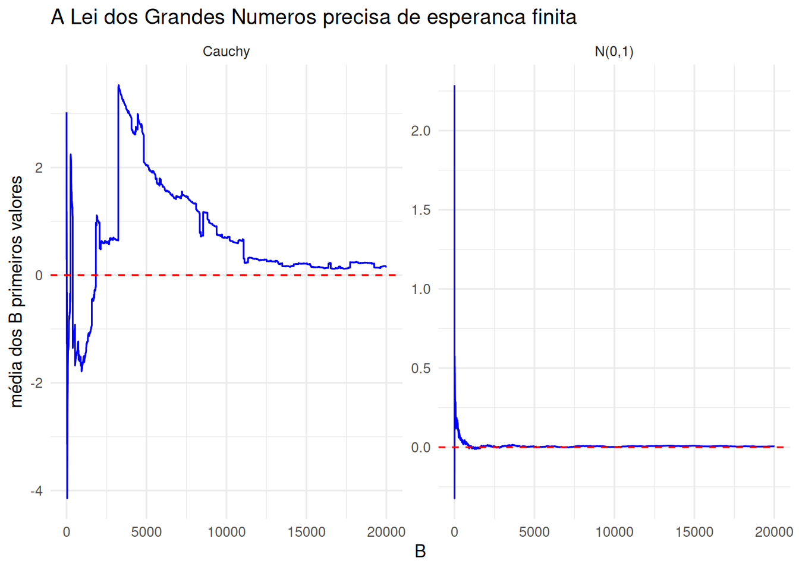
Mostrar código
import numpy as npimport matplotlib.pyplot as pltfrom scipy.stats import cauchynp.random.seed(7)B =20000# Média dos i primeiros valores gerados, para cada i, nas duas distribuiçõesindices = np.arange(1, B +1)media_normal = np.cumsum(np.random.normal(0, 1, B)) / indicesmedia_cauchy = np.cumsum(cauchy.rvs(size=B)) / indicesfig, axes = plt.subplots(1, 2, figsize=(10, 4))for ax, media, nome inzip(axes, [media_cauchy, media_normal], ["Cauchy", "N(0,1)"]): ax.plot(indices, media, color='blue') ax.axhline(y=0, color='red', linestyle='--') ax.set_title(nome) ax.set_xlabel('B')axes[0].set_ylabel('média dos B primeiros valores')plt.tight_layout()plt.show()
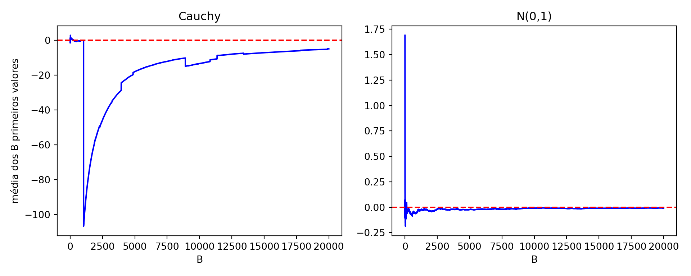
No painel da normal, a média se cola no zero. No da Cauchy, ela dá saltos que não diminuem: de tempos em tempos aparece um valor gigantesco, que sozinho desloca a média inteira. Rodar mais simulações não resolve — e, o que é mais perigoso, nada no código avisa que algo deu errado. Cabe a quem simula verificar antes se a esperança existe.
9.12 Exemplo 8: Problema das Figurinhas
Um colecionador está juntando figurinhas para completar um álbum da Copa. Qual é a probabilidade de que, ao comprar \(n\) pacotes, pelo menos um deles contenha duas ou mais figurinhas iguais? Essa probabilidade pode ser calculada analiticamente (veja o Exercício 12), mas o caminho por Monte Carlo dispensa qualquer conta: simulamos a compra de \(n\) pacotes, cada um com \(5\) figurinhas sorteadas entre as \(640\) do álbum, repetimos essa simulação \(B = 1000\) vezes e contamos em quantas delas houve pelo menos um pacote com repetição. A proporção obtida é a estimativa de Monte Carlo da probabilidade desejada.
set.seed(42)n_figurinhas <-640B <-1000n_pacotes <-1:50prob_coincidencia <-numeric(length(n_pacotes))for (ii inseq_along(n_pacotes)) { tem_repetida <-numeric(B)for (jj in1:B) {# Cada linha da matriz é um pacote com 5 figurinhas sorteadas com reposição figurinhas <-matrix(sample(1:n_figurinhas, n_pacotes[ii] *5, replace =TRUE),nrow = n_pacotes[ii], ncol =5)# apply(m, 1, f) aplica a função f a cada linha da matriz m; aqui, f verifica# se o pacote tem alguma figurinha repetida repetida_no_pacote <-apply(figurinhas, 1, function(pacote) any(duplicated(pacote))) tem_repetida[jj] <-any(repetida_no_pacote) } prob_coincidencia[ii] <-mean(tem_repetida)}
Mostrar código
import numpy as npnp.random.seed(42)n_figurinhas =640B =1000n_pacotes = np.arange(1, 51)prob_coincidencia = np.zeros(len(n_pacotes))for ii inrange(len(n_pacotes)): tem_repetida = np.zeros(B)for jj inrange(B):# Cada linha da matriz é um pacote com 5 figurinhas sorteadas com reposição figurinhas = np.random.randint(1, n_figurinhas +1, size=(n_pacotes[ii], 5))# len(set(pacote)) < 5 indica que o pacote tem figurinha repetida repetida_no_pacote = [len(set(pacote)) <5for pacote in figurinhas] tem_repetida[jj] =any(repetida_no_pacote) prob_coincidencia[ii] = np.mean(tem_repetida)
Agora podemos visualizar os resultados obtidos por meio do gráfico a seguir:
dados <-data.frame(n_pacotes = n_pacotes, prob_coincidencia = prob_coincidencia)ggplot(dados, aes(x = n_pacotes, y = prob_coincidencia)) +geom_point() +labs(x ="Número de pacotes comprados",y ="Prob. de ao menos 1 repetida no mesmo pacote") +theme_minimal()
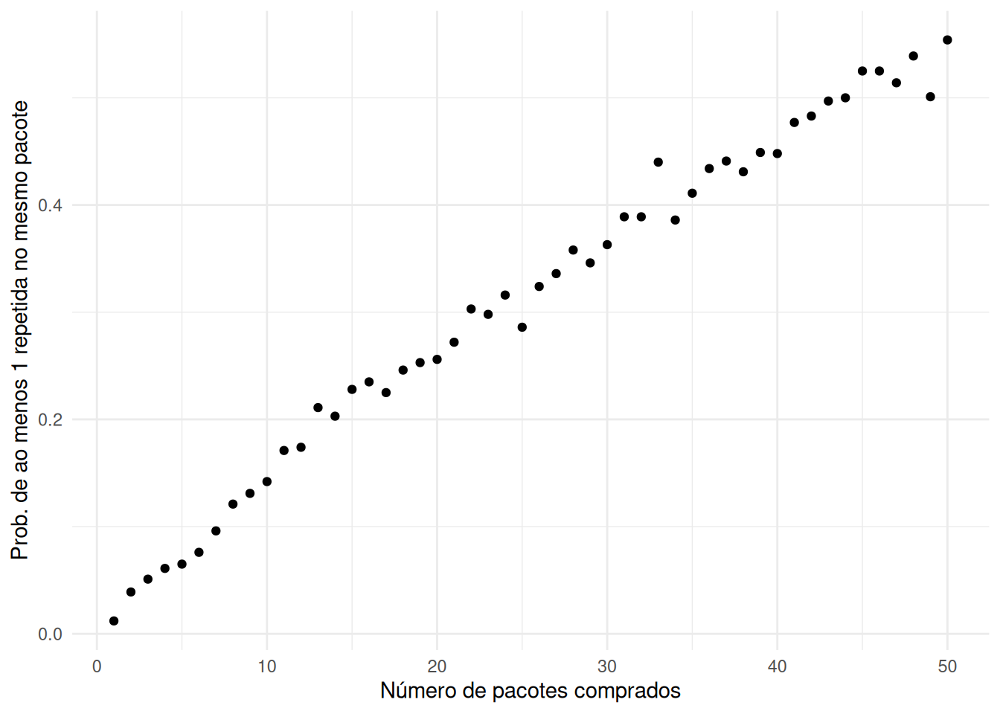
Mostrar código
import matplotlib.pyplot as pltplt.figure(figsize=(8, 6))plt.scatter(n_pacotes, prob_coincidencia, s=25)plt.xlabel('Número de pacotes comprados')plt.ylabel('Prob. de ao menos 1 repetida no mesmo pacote')plt.grid(True, linestyle='--', linewidth=0.7)plt.show()
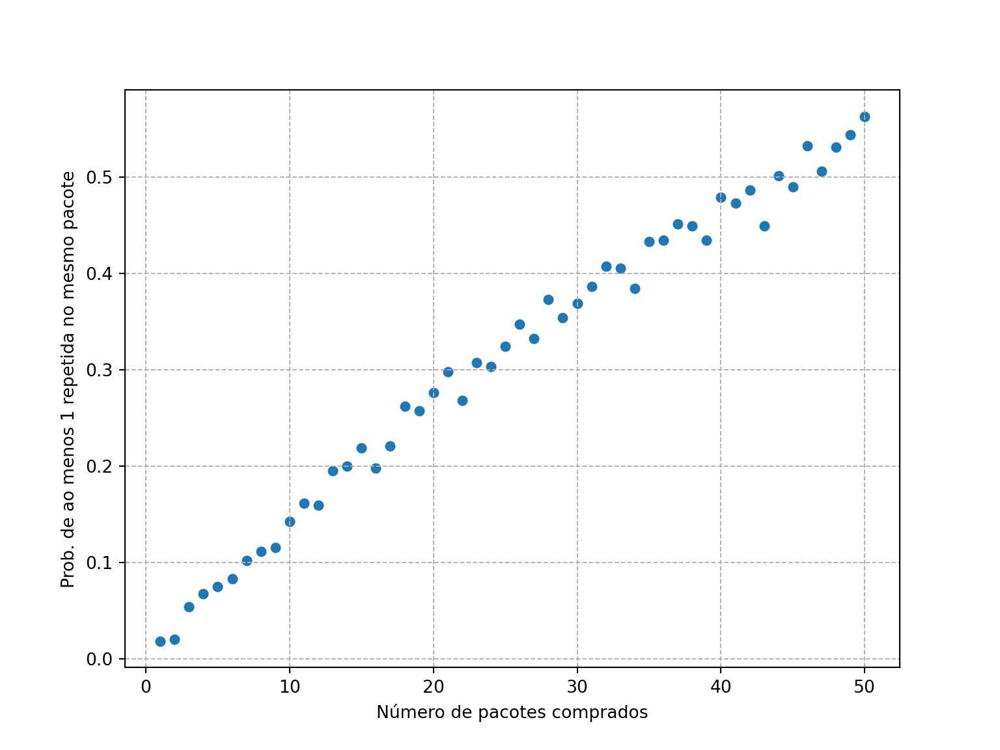
Simulação para completar o álbum
Uma segunda pergunta que também podemos responder via simulação é: quantos pacotes são necessários, em média, para completar o álbum? Aqui o número de pacotes é aleatório, e não fixo: compramos pacotes até que todas as \(640\) figurinhas tenham aparecido pelo menos uma vez. Para isso, guardamos em um vetor de TRUE/FALSE quais figurinhas já temos.
import numpy as npnp.random.seed(42)numero_pacotes = np.zeros(B)for jj inrange(B): ja_tenho = np.zeros(n_figurinhas, dtype=bool) # ja_tenho[k]: já apareceu? n_distintas =0 contador_pacotes =0while n_distintas < n_figurinhas:# em Python os índices começam em 0, então numeramos as figurinhas# de 0 a 639 para usá-las diretamente como índice de ja_tenho pacote = np.random.randint(0, n_figurinhas, size=5)for figurinha in pacote:ifnot ja_tenho[figurinha]: ja_tenho[figurinha] =True n_distintas +=1 contador_pacotes +=1 numero_pacotes[jj] = contador_pacotes
O número médio de pacotes necessários para completar o álbum é:
Com essa mesma simulação, podemos ainda estimar outras quantidades de interesse, sem gerar nada de novo — basta calcular a proporção das repetições em que o evento ocorreu:
cat("Probabilidade de precisar de mais de 800 pacotes: ",mean(numero_pacotes >800) *100, "%\n", sep ="")
Probabilidade de precisar de mais de 800 pacotes: 69.5%
Mostrar código
cat("Probabilidade de precisar de mais de 1000 pacotes: ",mean(numero_pacotes >1000) *100, "%\n", sep ="")
Probabilidade de precisar de mais de 1000 pacotes: 21.8%
Mostrar código
prob_mais_800 = np.mean(numero_pacotes >800) *100prob_mais_1000 = np.mean(numero_pacotes >1000) *100print(f"Probabilidade de precisar de mais de 800 pacotes: {prob_mais_800}%")
Probabilidade de precisar de mais de 800 pacotes: 71.8%
Mostrar código
print(f"Probabilidade de precisar de mais de 1000 pacotes: {prob_mais_1000}%")
Probabilidade de precisar de mais de 1000 pacotes: 22.900000000000002%
Repare no que este exemplo tem de diferente dos anteriores: não há integral nenhuma à vista, e seria trabalhoso escrever a densidade da v.a. “número de pacotes até completar o álbum”. Ainda assim, o método se aplica sem alteração, porque tudo o que ele exige é saber simular o experimento — não descrevê-lo em fórmulas.
9.13 Exercícios
Exercício 1. Considere a integral
\[
\theta = \int_0^{10} \sin(x^2) \, dx.
\]
Escreva \(\theta\) na forma \((b-a)\,\mathbb{E}[g(U)]\), explicitando quem são \(U\) e \(g\).
Estime \(\theta\) por Monte Carlo com \(B = 10^4\) e forneça um intervalo de confiança de \(95\%\).
Compare sua estimativa com o valor obtido por integração numérica (integrate em R, scipy.integrate.quad em Python).
Quantas simulações seriam necessárias para que a semi-amplitude do intervalo fosse menor que \(0{,}01\)? Verifique rodando com esse \(B\).
A integral não é sobre um intervalo limitado, de modo que não podemos usar a uniforme diretamente. Um caminho é a mudança de variável \(u = 1/x\): verifique que ela leva a \(\theta = \int_0^1 u\, du = \mathbb{E}[U]\), com \(U \sim \text{Unif}(0,1)\). Estime \(\theta\) assim, com \(B = 10^4\), e forneça um intervalo de confiança.
Outro caminho é escolher uma densidade com suporte em \((1,\infty)\), como a de \(X = 1 + Y\) com \(Y \sim \text{Exp}(1)\), que é \(f(x) = e^{-(x-1)}\) para \(x > 1\). Escreva o estimador correspondente e mostre que \(\mathbb{E}\left[\left(g(X)/f(X)\right)^2\right] = \infty\), ou seja, que ele tem variância infinita. Rode-o mesmo assim, com \(B = 10^4\), e note que ele parece funcionar perfeitamente. Explique por quê: a partir de que valor de \(X\) a razão \(g(X)/f(X)\) começa a explodir, e qual é a probabilidade de observar um valor desses? Moral: ter o suporte certo não basta para uma densidade ser uma boa escolha, e o problema pode não aparecer na simulação.
Voltando ao estimador do item (b), construa \(10\,000\) estimativas de \(\theta\), cada uma baseada em \(B = 100\) simulações, com seus respectivos intervalos de confiança de \(95\%\). Qual a proporção dos intervalos que contém o valor verdadeiro de \(\theta\)?
Repita o item anterior com \(B = 1000\). A proporção ficou mais próxima de \(95\%\)? Por quê?
Exercício 3. Seja \(X \sim \text{Exp}(\lambda)\) com \(\lambda = 2\).
Estime \(\mathbb{E}[X^2]\) por Monte Carlo com \(B = 10^4\), forneça um intervalo de confiança e compare com o valor exato \(2/\lambda^2\).
Repita para \(\mathbb{E}[X^4]\), cujo valor exato é \(24/\lambda^4\).
Compare as larguras relativas dos dois intervalos (isto é, a semi-amplitude dividida pela estimativa). Por que estimar \(\mathbb{E}[X^4]\) é mais difícil, mesmo gerando exatamente os mesmos valores de \(X\)?
Estime \(\mathbb{P}(X \cdot Y > 3)\) por Monte Carlo e forneça um intervalo de confiança.
Estime também \(\mathbb{E}[X \cdot Y]\) e compare com o valor teórico \(\mathbb{E}[X]\mathbb{E}[Y]\).
Este é um exemplo em que a densidade de \(XY\) não é imediata. Comente: o que o método de Monte Carlo exigiu que você soubesse sobre \(XY\)?
Exercício 5. Seja \(Z \sim N(0,1)\). Mostre que sua função geradora de momentos é \(\mathbb{E}[e^{tZ}] = e^{t^2/2}\). Para \(t \in \{-1,\ 0{,}5,\ 1,\ 1{,}5\}\), estime \(\mathbb{E}[e^{tZ}]\) por Monte Carlo, forneça intervalos de confiança e compare com a fórmula fechada. Estude como o erro decai quando \(B\) cresce e comente por que os valores maiores de \(t\) dão mais trabalho.
Exercício 6. Seja \(X_1,\ldots,X_n\) uma amostra i.i.d. de \(X \sim \text{Gama}(2,1)\), cuja média é \(2\). Para \(n \in \{5, 20, 100\}\), calcule:
uma cota superior para \(\mathbb{P}(\bar{X}_n - 2 > 0{,}3)\) usando a desigualdade de Markov;
uma cota superior para \(\mathbb{P}(\bar{X}_n - 2 > 0{,}3)\) usando a desigualdade de Chebyshev;
uma aproximação para \(\mathbb{P}(\bar{X}_n - 2 > 0{,}3)\) usando o Teorema Central do Limite;
uma aproximação para \(\mathbb{P}(\bar{X}_n - 2 > 0{,}3)\) por Monte Carlo, com \(B = 10\,000\) repetições (em cada repetição, gere uma amostra de tamanho \(n\) e calcule sua média).
Comente quem é mais informativo em cada \(n\). Note que aqui \(n\) e \(B\) têm papéis completamente diferentes: qual deles você poderia aumentar à vontade se este fosse um problema real?
Exercício 7. O volume da bola unitária em dimensão \(d\), \(\{x \in \mathbb{R}^d : \|x\| \leq 1\}\), pode ser estimado exatamente como no Exemplo 5: sorteando pontos uniformemente no cubo \([-1,1]^d\) (que tem volume \(2^d\)) e contando quantos caem na bola.
Implemente o estimador \(\hat{V}_d = 2^d \cdot \hat{p}\), em que \(\hat p\) é a proporção de pontos com \(\|x\| \leq 1\). Verifique-o em \(d = 2\) (deve dar \(\pi\)) e em \(d = 3\) (deve dar \(4\pi/3\)).
Estime \(V_{10}\) com \(B = 10^5\) e compare com o valor exato \(V_d = \pi^{d/2}/\Gamma(d/2 + 1)\) (use gamma em R e math.gamma em Python).
Faça um gráfico da proporção \(\hat p\) de pontos aceitos em função de \(d = 1, 2, \ldots, 15\). O que acontece? Interprete: onde estão quase todos os pontos de um cubo em dimensão alta?
Explique por que o erro relativo do estimador piora com \(d\), mesmo com \(B\) fixo. (Dica: para uma indicadora, \(\text{Var}(\hat p) = p(1-p)/B\); escreva o erro padrão relativo em função de \(p\).)
Exercício 8. (Agulha de Buffon) Uma agulha de comprimento \(1\) é jogada ao acaso sobre um piso com linhas paralelas separadas por uma distância \(1\). Pode-se mostrar que a probabilidade de a agulha cruzar alguma linha é \(2/\pi\). Para simular um lançamento, gere a distância \(D\) do centro da agulha à linha mais próxima, com \(D \sim \text{Unif}(0,\ 1/2)\), e o ângulo \(\Theta\) da agulha com as linhas, com \(\Theta \sim \text{Unif}(0,\ \pi/2)\), independentes; a agulha cruza uma linha se \(D \leq \frac{1}{2}\sin(\Theta)\).
Simule \(B = 10^5\) lançamentos, estime \(2/\pi\) e obtenha uma estimativa de \(\pi\) a partir dela.
Forneça um intervalo de confiança para \(\pi\). Cuidado: o intervalo sai naturalmente para \(p = 2/\pi\); para passá-lo a \(\pi\), aplique a transformação \(p \mapsto 2/p\) aos dois extremos (e note que ela inverte a ordem).
Compare a precisão obtida com a do Exemplo 5 para o mesmo \(B\). Qual dos dois métodos estima \(\pi\) com menos simulações?
Exercício 9. Este exercício verifica empiricamente a taxa \(1/\sqrt{B}\). Considere \(\theta = \mathbb{E}[e^{-U}]\) com \(U \sim \text{Unif}(0,1)\), cujo valor exato é \(1 - e^{-1}\).
Para cada \(B \in \{10, 10^2, 10^3, 10^4\}\), repita \(500\) vezes a estimação de \(\theta\) e calcule a raiz do erro quadrático médio (REQM) dessas \(500\) estimativas em relação ao valor verdadeiro.
Faça um gráfico de \(\log(\text{REQM})\) contra \(\log(B)\). O que a inclinação da reta deveria ser? Estime-a (por exemplo, com lm em R ou np.polyfit em Python).
Compare a REQM obtida com o valor teórico \(\sigma/\sqrt{B}\), calculando \(\sigma = \sqrt{\text{Var}(e^{-U})}\) analiticamente.
Exercício 10. (Ruína do jogador) Um jogador começa com \(10\) fichas e, a cada rodada, ganha \(1\) ficha com probabilidade \(p\) ou perde \(1\) ficha com probabilidade \(1-p\), de forma independente. Ele para quando fica sem fichas ou quando chega a \(20\) fichas.
Simule \(B = 10\,000\) partidas com \(p = 0{,}5\) e estime a probabilidade de o jogador chegar a \(20\) fichas, com intervalo de confiança. Compare com o valor teórico \(1/2\).
Estime também a duração média de uma partida e compare com o valor teórico \(10 \times (20 - 10) = 100\) rodadas.
Repita com \(p = 0{,}48\) (um cassino com pequena vantagem). A probabilidade de vitória cai muito mais do que os \(2\) pontos percentuais de desvantagem por rodada? Comente.
Ainda com \(p = 0{,}48\), estime a probabilidade de vitória partindo de \(10\) fichas e indo até \(20\), e depois partindo de \(100\) fichas e indo até \(200\). O que acontece quando se joga “a mesma partida”, mas com mais fichas?
Exercício 11. Monte Carlo também serve para comparar estimadores, e não apenas para calcular integrais. Suponha uma amostra \(X_1, \ldots, X_n\) com \(n = 25\), e considere dois estimadores do centro da distribuição: a média amostral e a mediana amostral.
Com \(X_i \sim N(0,1)\), gere \(B = 10\,000\) amostras de tamanho \(25\); para cada uma, calcule a média e a mediana. Estime a variância de cada estimador e compare com os valores teóricos aproximados \(1/n\) e \(\pi/(2n)\).
Qual dos dois é preferível sob normalidade? E qual é a perda relativa de eficiência ao usar a mediana?
Repita o experimento com \(X_i \sim t_2\) (uma distribuição de caudas pesadas, rt(n, df = 2) em R e scipy.stats.t.rvs(2, size=n) em Python). A conclusão se inverte?
Repita agora com \(X_i \sim\) Cauchy. Uma das duas variâncias estimadas vai crescer sem controle conforme você aumenta \(B\). Qual, e por quê? (Compare com o Exemplo 7.)
Exercício 12. Este exercício confere as contas do Exemplo 8 contra a teoria.
Mostre que a probabilidade de um pacote de \(5\) figurinhas (sorteadas com reposição entre \(640\)) ter pelo menos uma repetição é \(p = 1 - \prod_{k=1}^{4}\left(1 - \frac{k}{640}\right)\), e calcule seu valor.
Conclua que, com \(n\) pacotes, a probabilidade de haver pelo menos um pacote com repetição é \(1 - (1-p)^n\). Sobreponha essa curva ao gráfico do Exemplo 8.
O número esperado de figurinhas que é preciso comprar para completar um álbum de \(N\) figurinhas é \(N \sum_{k=1}^{N} \frac{1}{k}\) (o “problema do colecionador de cupons”). Divida por \(5\) para obter o número esperado de pacotes e compare com a média simulada no Exemplo 8.
Forneça um intervalo de confiança para o número médio de pacotes obtido na simulação. O valor teórico do item (c) cai dentro dele?
Exercício 13. (Desafio) Considere
\[
\theta = \int_0^1 x^{-3/4}\, dx = 4.
\]
Usando \(U \sim \text{Unif}(0,1)\) e \(g(u) = u^{-3/4}\), mostre que \(\mathbb{E}[g(U)] = 4 < \infty\), mas \(\mathbb{E}[g(U)^2] = \infty\). Conclua que o estimador de Monte Carlo é não viesado e consistente, mas tem variância infinita.
Faça o gráfico da média corrente para \(B = 10^5\). Ela converge? Como são as oscilações, comparadas às do Exemplo 1?
Construa \(1000\) intervalos de confiança de \(95\%\), cada um com \(B = 1000\), e calcule a proporção que contém \(\theta = 4\). Ela é próxima de \(95\%\)? Explique o que deu errado.
Agora escolha \(f(x) = \frac{1}{4}x^{-3/4}\) em \((0,1)\) como densidade geradora (verifique que ela integra \(1\)). Mostre que, com essa escolha, o estimador \(\frac{1}{B}\sum g(X_i)/f(X_i)\) tem variância zero. Este é o caso extremo da ideia do Capítulo 11.
Exercício 14. (Desafio) Seja \(\theta = \mathbb{P}(Z > 4{,}5)\), com \(Z \sim N(0,1)\), cujo valor é aproximadamente \(3{,}4 \times 10^{-6}\).
Para o estimador \(\hat{\theta}_B\) baseado na indicadora, mostre que o erro padrão relativo é \[
\frac{\text{ep}(\hat{\theta}_B)}{\theta} = \sqrt{\frac{1 - \theta}{\theta B}}.
\]
Quantas simulações são necessárias para que esse erro relativo seja de no máximo \(10\%\)? E se \(\theta\) fosse \(10^{-9}\)?
Rode a simulação com \(B = 10^5\) algumas vezes (mudando a semente). Com que frequência você obtém \(\hat{\theta}_B = 0\)? O que o intervalo de confiança devolve nesse caso, e por que ele é enganoso?
Compare com a situação do Exemplo 4, em que \(\theta \approx 0{,}66\). Por que lá o mesmo \(B\) produzia uma estimativa excelente?
Mostre que a esperança de \(X_{(k)}\) (a \(k\)-ésima estatística de ordem) é \(\sum_{j=1}^k \frac{1}{\lambda(n-j+1)}\).
Dica: pense nos espaçamentos \(Y_i = X_{(i)} - X_{(i-1)}\), com \(X_{(0)} = 0\). Mostre que \(\min(X_1,\dots,X_n) \sim \text{Exp}(n\lambda)\) e, depois, use a falta de memória: depois que o mínimo “sai”, restam \(n-1\) exponenciais i.i.d. \(\text{Exp}(\lambda)\). Conclua que \(Y_i \sim \text{Exp}((n-i+1)\lambda)\) e, portanto, \(\mathbb{E}[Y_i] = \frac{1}{(n-i+1)\lambda}\). Finalmente, note que \(X_{(k)} = \sum_{i=1}^k Y_i\) e some as esperanças.
Estime \(\mathbb{E}[X_{(5)}]\) para \((n,k,\lambda) = (50, 5, 2)\) por Monte Carlo e compare com o valor teórico. Forneça um intervalo de confiança.
Use a mesma simulação para estimar \(\mathbb{E}[X_{(50)}]\), isto é, a esperança do máximo. Compare com a fórmula do item (a) e observe qual dos espaçamentos contribui mais para o total.